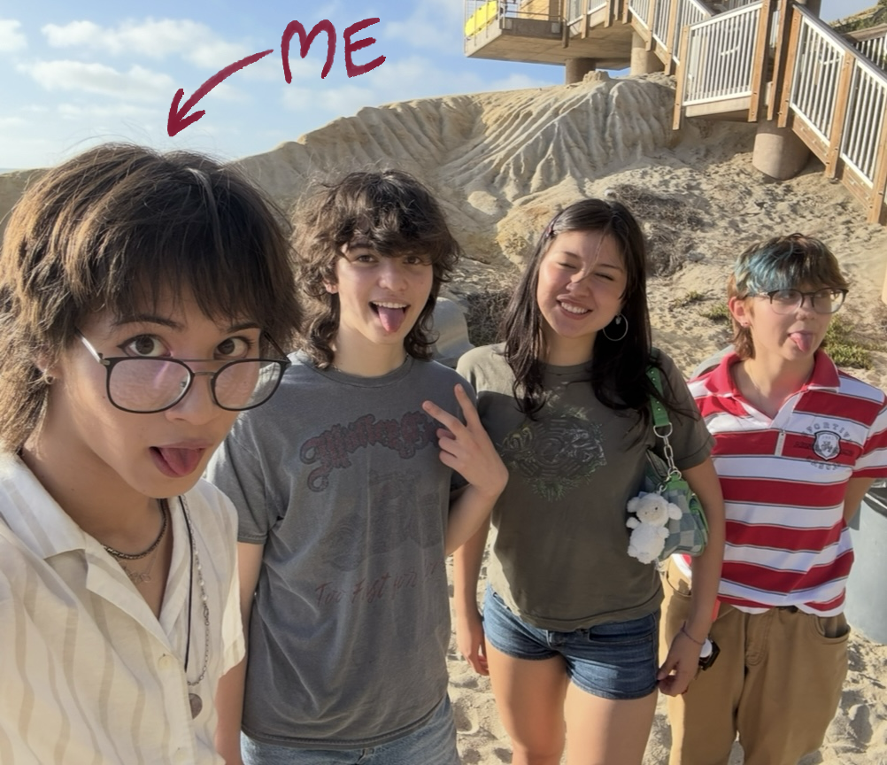
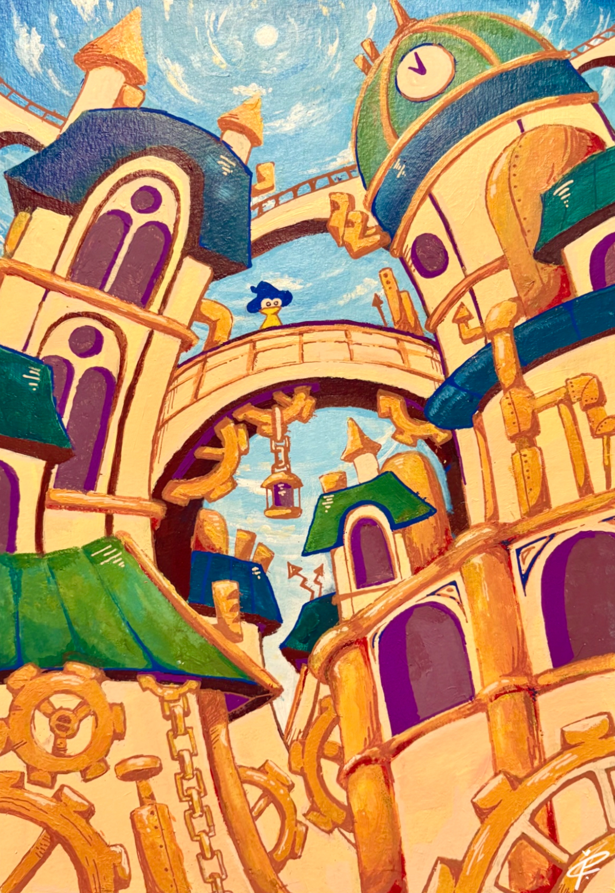
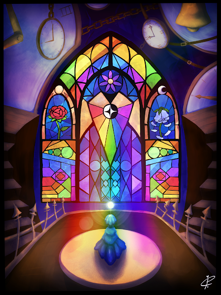

 My name is Tan Copeland. I am seventeen years old and I live in San Diego, California with my mother and father. I attend the high school Canyon Crest Academy as a junior and I am a member of the Envision Visual Arts Conservatory program. I have a lot of friends and have many connections with different people, as I find meeting and getting to know new people very fun and exciting. Although I have my own issues and worries about life, I would say that I am very content with how my life is going and overall, I am happy. I greatly believe that I have a big future ahead of me.
 My greatest passions lie in art, music, and writing. I adore creating visual art and expressing my creativity through creating characters and fantasy worlds, telling stories through the lens of art. I have been playing piano ever since I was very little, and today, composing music still stands as one of my greatest interests. I now both play piano often and compose music digitally using a program called FL Studio. Writing tales and fables about fictional happenings is greatly fulfilling to me, as it makes me feel like our world does not have to be as dull as many see it, you just have to read between the lines. All three of these passions tie together into being able to tell stories through art, music, and writing, and I hope that one day I can inspire others to explore creativity. There is a storytelling-based passion project of mine that I have been working on for a long time now that one day wish to complete.
 One day, I hope to have something that I can show to the world. Not something little to present to a small audience, but something that I will have put blood, sweat, tears, and love into that can inspire the world to take action. A good way to gain traction in achieving this goal is to post on social media, hence why I run a lot of my artistic projects through my Youtube channel and my Instagram page. I am a firm believer that if one puts enough love and effort into achieving something, it can and will be achieved. I wish to create things that have so much passion within them that they will influence others to explore themselves and what they want to do in life. I see too many people every day that seem to have no passion for anything and simply go along through their life, but I believe that everyone has passion and interest for something if you dig deep enough.